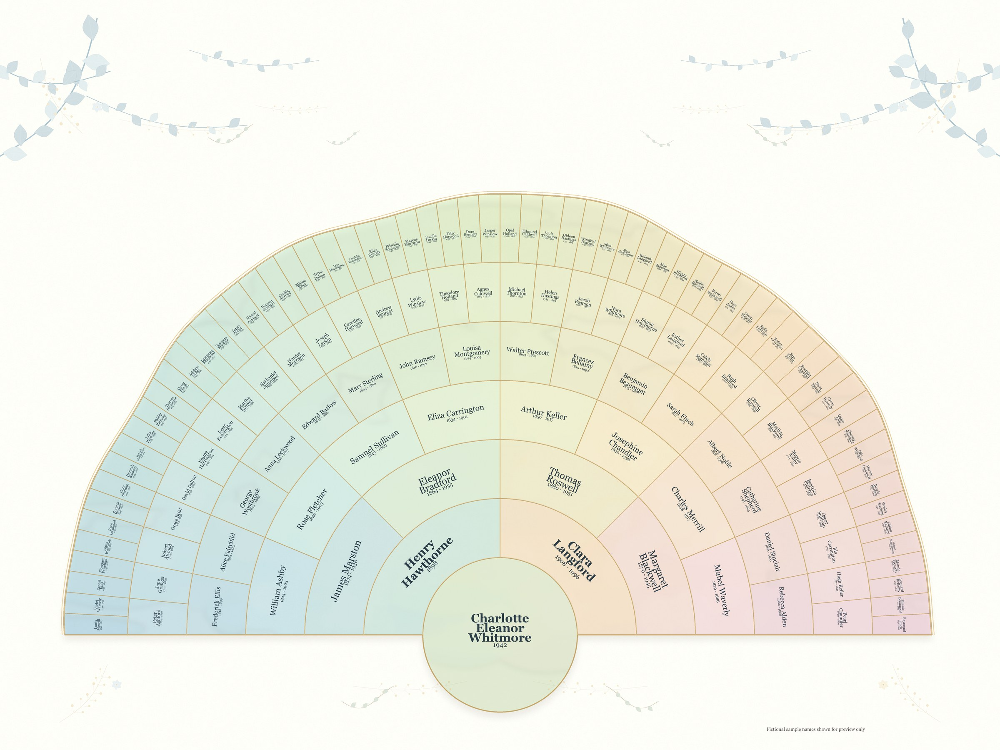
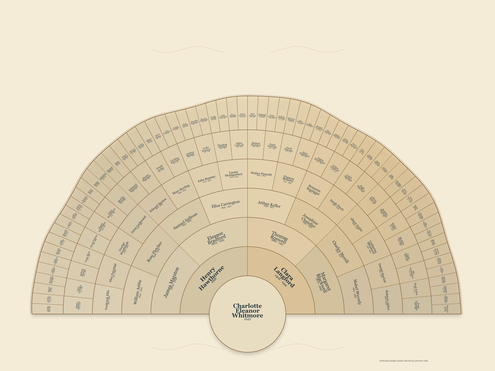
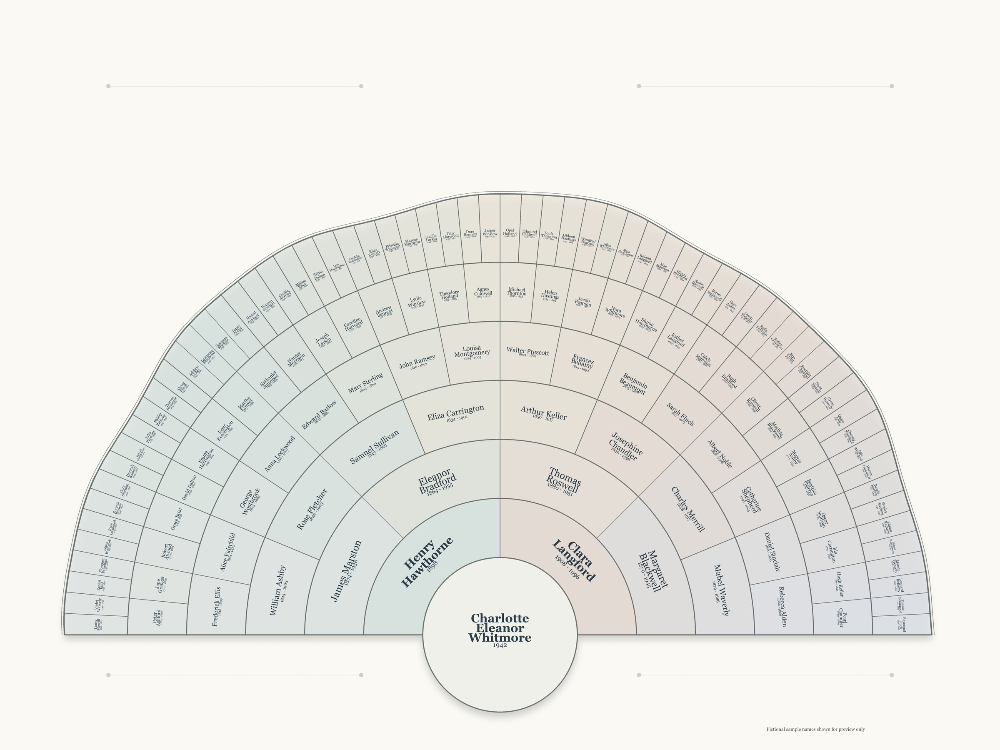
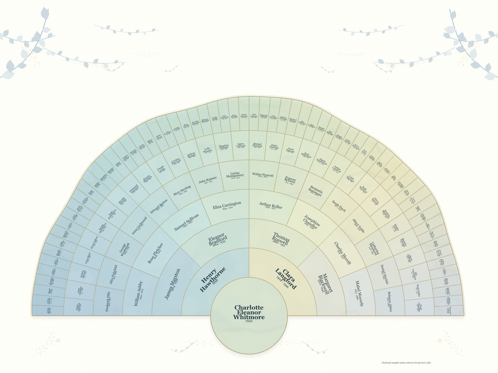
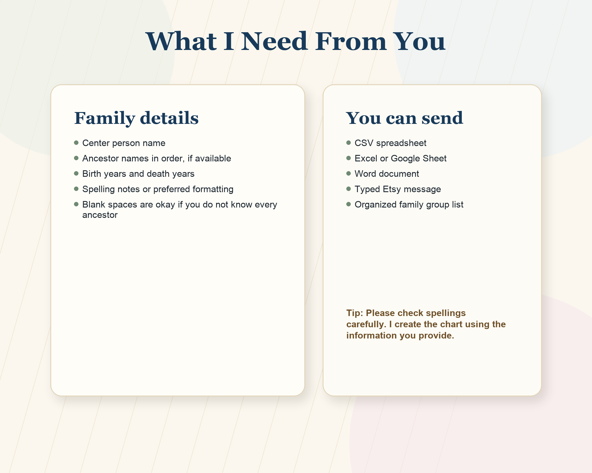

Personalized family history wall art
Custom genealogy fan charts created for you.
Send your ancestor information, choose a style, and receive a finished printable family tree fan chart designed as a meaningful heirloom keepsake.

Simple ordering process
How it works
Customers can send information in the format they already have. I organize it into the correct chart spaces and prepare the finished printable file.
Purchase
Choose the chart generation count, file option, and any add-ons listed in the Etsy listing.
Send Details
Send names, dates, title, and design preferences by Etsy message, spreadsheet, CSV, or document.
Receive File
I create the chart, send the finished digital file, and complete included minor revisions if needed.
Completed examples
See what a filled chart can look like.
These examples use fictional names so customers can picture the finished result after their own family information is entered.



- Garden Pastel
- Vintage Parchment
- Modern Minimal
- Sage & Blue
- Lavender & Gold
- Coastal Mist
- Cottage Floral
- Black & Gold Luxe
- Midnight Celestial
- Art Deco Emerald
What customers send
Use the family information you already have.
A complete tree is not required. Unknown ancestors or missing dates can be left blank.
- Center person name
- Ancestor names, as many as available
- Birth years and death years, if known
- Preferred chart title
- Preferred style, colors, or theme
- Any spelling notes or special requests

Digital delivery
What the finished order includes
The chart is delivered as a digital printable file. No physical item is shipped.
Finished custom chart
Ancestor names and dates are entered into the fan chart spaces using the information provided by the customer.
Printable digital file
PNG is recommended for high-resolution printing. PDF or extra sizes can be offered as listing variations.
Design customization
Choose chart title, paper style, fan colors, decorative accents, text color, and overall design direction.
Review and revisions
Minor spelling or date corrections can be included based on the Etsy listing variation or shop policy.
Questions
Helpful details before ordering
Do customers edit this themselves?
No. This is a done-for-you service. Customers send family information and style preferences, then I create the finished chart file.
Is genealogy research included?
No. The chart is created using the information provided by the customer. Research can be offered separately if you choose to add that service later.
What if a customer does not know all ancestors?
Blank spaces are completely fine. Charts can be created with fewer generations or with unknown names/dates left empty.
What file does the customer receive?
The standard delivery can be a high-resolution printable PNG. PDF, extra sizes, or rush delivery can be added as Etsy variations.
Can customers choose the chart style?
Yes. Customers can choose a preset or request preferences such as floral, masculine, parchment, modern, watercolor, travel, or luxury gold.
Ready to preserve your family story?
Order a custom fan chart through Etsy.
Replace this button with your Etsy listing link when the listing is published. Customers will purchase on Etsy, then send their family information by Etsy message or file upload.